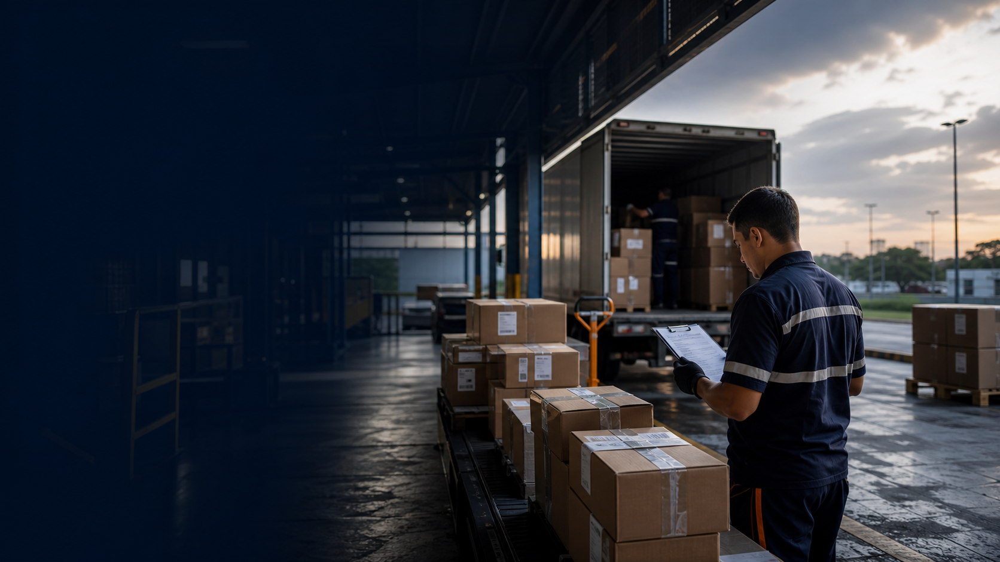
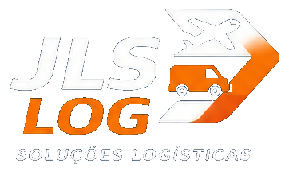

Para empresas de fora do MT
Uma base local para receber cargas, distribuir no estado e retornar informação com controle.

JLS Log · Soluções logísticas
Com base em Cuiabá, ajudamos empresas de fora a operar no estado e empresas regionais a chegar ao Brasil. Estruturamos recebimento, transferência, distribuição, last mile, reversa e cargas sensíveis com malha rodoviária, Azul Logística e atendimento próximo.
Para e-commerce, agro, saúde, biológicos, institucional, indústrias, transportadoras, distribuidores e operações especiais: a conversa começa pelo cenário real da carga, não por uma tabela genérica.
Origem, destino, urgência, tipo de carga e retorno esperado.
Rodoviário, apoio aéreo, transferência, last mile, reversa ou rota dedicada.
Comprovante, rastreio, ocorrência, reversa e dados para decisão.
A JLS conta com uma área operacional de 500 m² em Cuiabá, a 7 minutos do aeroporto, com espaço para recebimento, conferência, triagem e estacionamento para clientes e parceiros que precisam alinhar a operação presencialmente.
Selecione o cenário mais próximo da sua realidade.
A JLS pode receber a carga em Cuiabá, organizar por destino, distribuir no estado e retornar informação para sua equipe.
Para empresas de fora, o desafio é ter alguém no estado que receba, organize e responda pela entrega. Para empresas regionais, o desafio é competir com operações conectadas aos grandes centros. A JLS atua nesse intervalo.
Uma base local para receber cargas, distribuir no estado e retornar informação com controle.
Apoio logístico para conectar Mato Grosso ao Brasil sem depender de improviso ou soluções distantes.
Extensão regional para e-commerce, transportadoras, indústrias, distribuidores e contratos com SLA.
A JLS organiza serviços pelo resultado que o decisor precisa defender: cobertura, previsibilidade, rastreio, reversa, entrada no Mato Grosso e conexão com o Brasil.
Amplie cobertura sem montar base própria em cada cidade.
Recebimento em Cuiabá, separação por destino, distribuição para capital e interior, comprovante de entrega e retorno de informação.
Movimente carga entre origem, base, CD, transportadora ou ponto de distribuição com previsibilidade.
Apoio para transferências regionais, cargas vindas de outros estados e redistribuição dentro do Mato Grosso.
Entregue ao cliente final ou ponto comercial e trate devoluções sem perder controle.
Operação para e-commerce, distribuidores, varejo, saúde, peças, insumos e demandas com prova de entrega.
Reduza tempo de resposta quando a urgência não cabe apenas na rota rodoviária.
Representação Azul Logística para conectar Mato Grosso a outras regiões do Brasil, com apoio em coletas, embarques e recebimentos.
Reduza risco operacional, técnico ou contratual.
Fluxos para agro, saúde, biológicos, peças críticas, insumos e cargas que precisam de rastreabilidade por etapa.
Contrate logística que suporte documentação, SLA e prestação de contas.
Operação preparada para órgãos institucionais, empresas públicas e privadas, contratos homologados e demandas com governança.
Uma entrega de e-commerce, uma peça crítica no agro, uma amostra que exige custódia ou um contrato auditável pedem conversas diferentes. Selecione o cenário e veja como a JLS pode apoiar com rota, prazo, comprovação e cobertura no Mato Grosso.
Para marketplaces, lojas virtuais, operadores, transportadoras e distribuidores, a JLS apoia middle mile, entrada de carga no estado, distribuição regional, entregas finais e logística reversa.

Veja como a JLS pode entrar no seu fluxo: receber, organizar, distribuir, comprovar ou conectar sua carga ao Mato Grosso e ao Brasil. A conversa começa pelo que importa para decidir: origem, destino, prazo, risco e controle.
Tenho cargas chegando em Cuiabá e preciso entender como a JLS pode receber, distribuir e responder pela entrega no Mato Grosso.
Conversar sobre este cenárioA JLS é uma empresa local em fase de escala. Já atua em operações que pedem controle, documentação e compromisso, e cresce com parceiros que valorizam proximidade, responsabilidade e construção de longo prazo.
Governança, documentação, SLA e capacidade para atender operações institucionais, públicas ou privadas.
Conexão nacional, apoio aéreo e contato com padrões operacionais exigidos por grandes fluxos.
Presença local, conhecimento de rota, interior, prazos e particularidades reais do Mato Grosso.
Vivência com demandas ligadas a grandes players e abertura para construir parcerias de longo prazo.
Se sua empresa quer estruturar uma operação recorrente, solicite uma análise logística. Se já existe uma carga pontual com origem, destino e urgência definidos, use a cotação rápida.
Se você precisa envolver compras, operação, diretoria ou parceiros, escolha o material do cenário mais próximo da sua demanda e use como ponto de partida para discutir rota, prazo, risco e cobertura no Mato Grosso.
A JLS combina presença local, conhecimento regional, malha rodoviária, representação Azul Logística e experiência em operações auditáveis. Estamos em fase de escala e acreditamos que as parcerias estabelecidas agora podem definir o crescimento mútuo dos próximos anos.
Traga seu cenário de origem, destino, prazo ou volume. A JLS responde com visão operacional, não só com tabela.